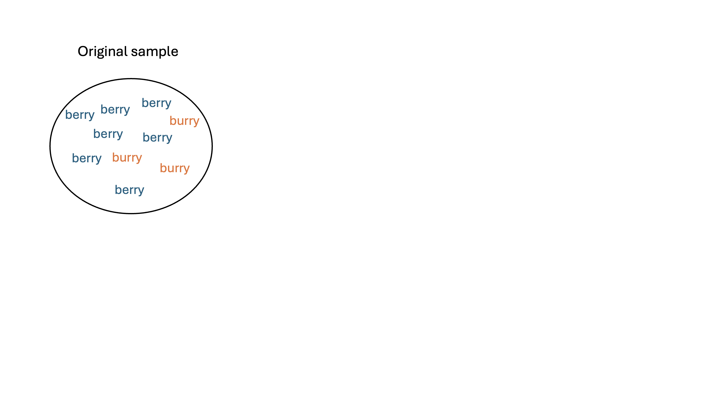
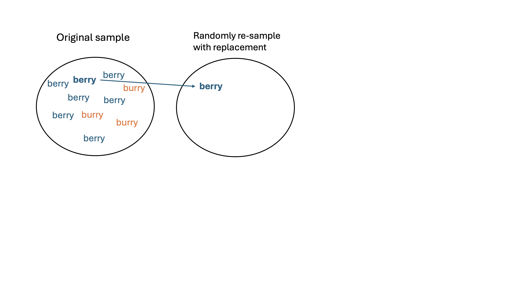
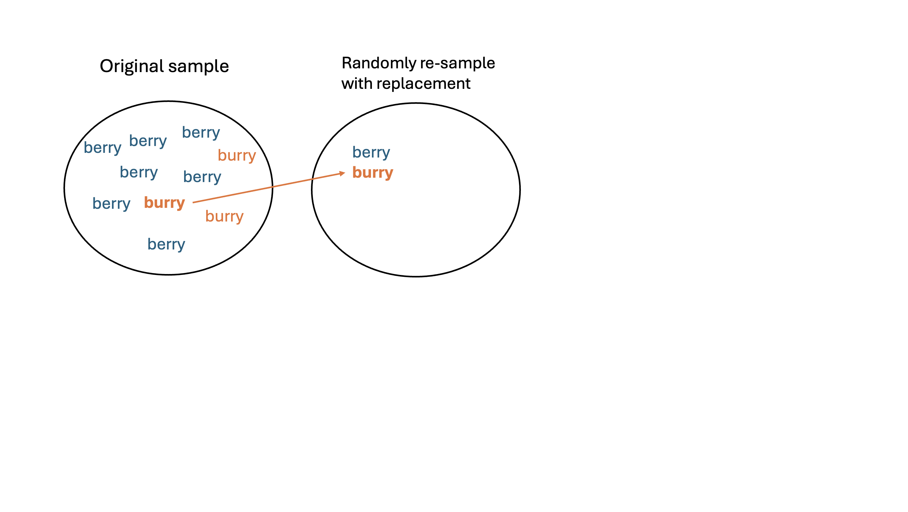
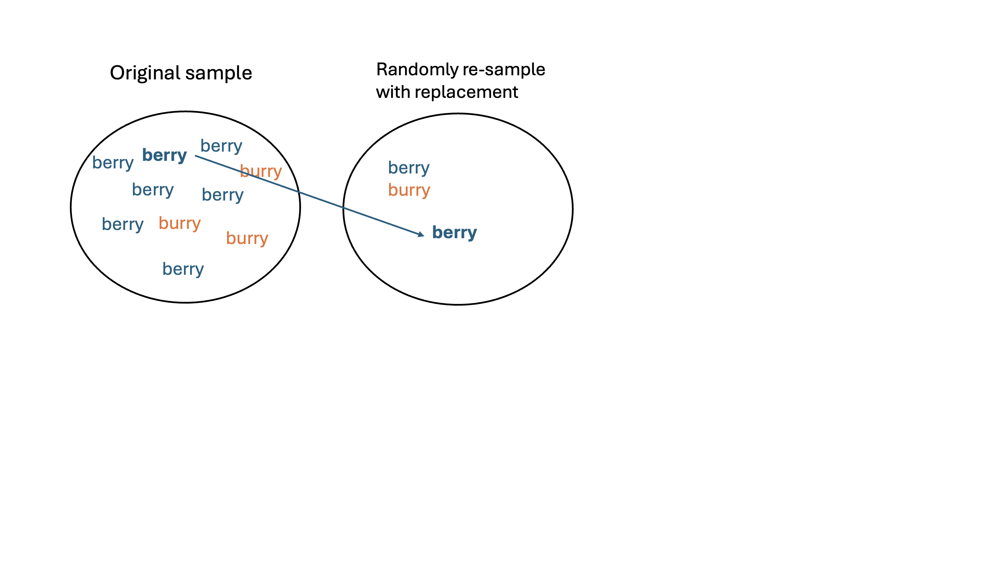
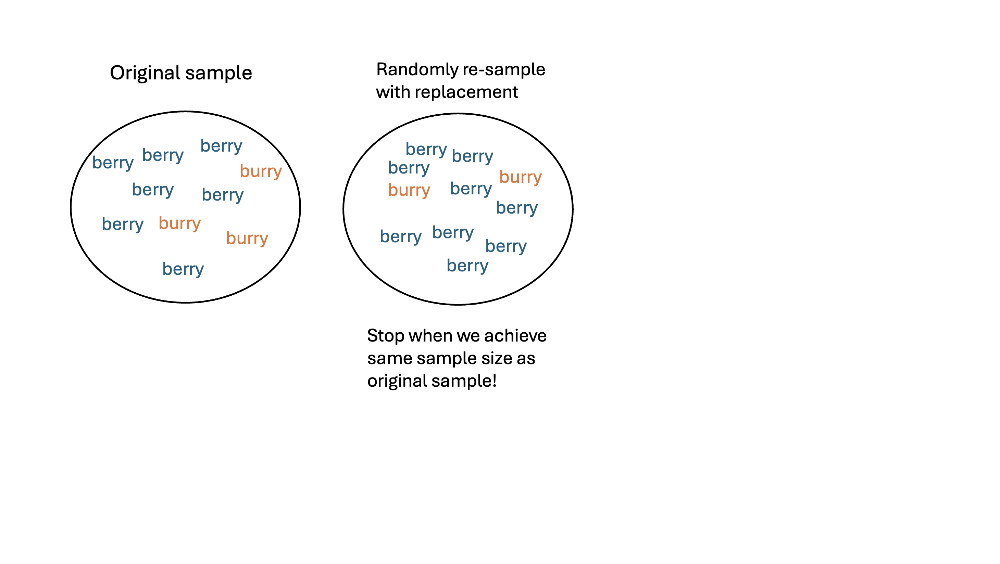
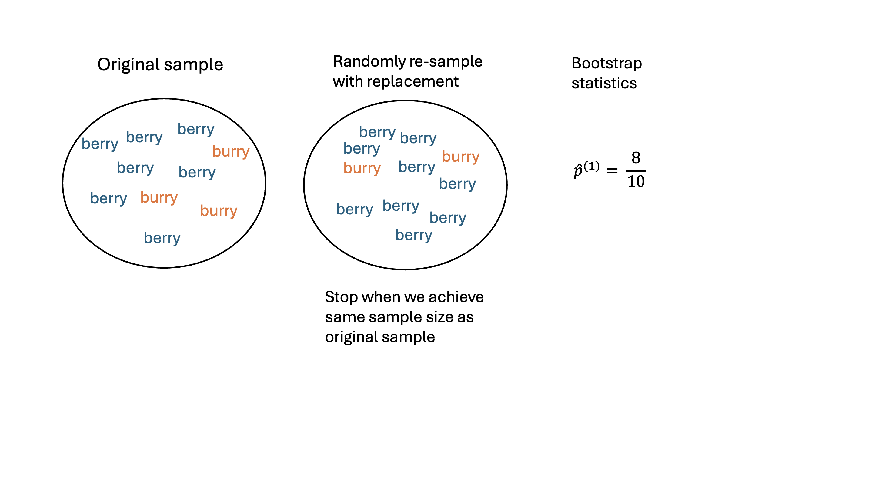
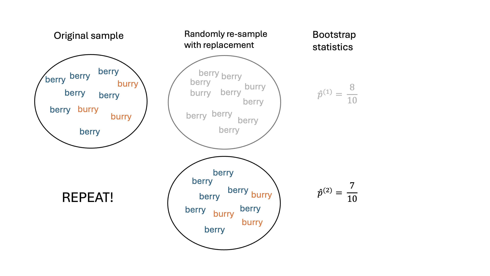
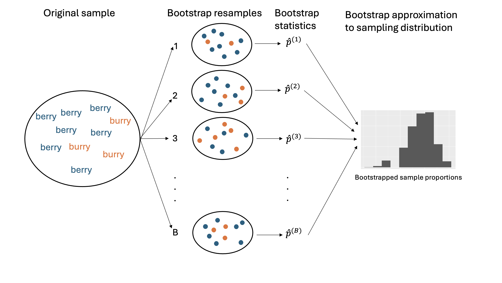

2025-10-13
Statistical inference: using data from sample to say something about target population
Research questions usually about population parameter, for which we obtain a point estimate as a “best guess” of that parameter
However, the values of the point estimates will vary across samples –> sampling distribution: the distribution of sample statistics across repeated sampling
As part of a quality control process for computer chips, an engineer at a factory randomly samples 212 chips during a week of production to test the current rate of chips with severe defects. She finds that 27 of the chips are defective.
A nonprofit wants to understand the fraction of households that have elevated levels of lead in their drinking water. They expect at least 5% of homes will have elevated levels of lead, but not more than about 30%. They randomly sample 800 homes and work with the owners to retrieve water samples, and they compute the fraction of these homes with elevated lead levels. They repeat this 1,000 times and build a distribution of sample proportions.
Remember, our questions of interest are about a population. The following options list ways to answer the question. For each, what are the pros/cons?
Using the population
Using a single sample (i.e. the sample distribution)
Using several samples (i.e. the sampling distribution)
Sometimes, we assume that the population/data have a very specific behavior, and this allows us to exactly define the sampling distribution without having to physically sample
If we don’t want to make assumptions, then we rely on sampling
Bootstrapping is a flexible, simulation-based method that allows us to move forward in an analysis without knowing exactly how the data were generated.
At the end of this procedure, we will have a bootstrap distribution of resampled or bootstrap statistics.
In the candy activity, I claim that we did not perform bootstrapping. Why not?
Let’s return to the Middle-“berry” vs Middle-“burry” example. Suppose my population of interest is STAT 201A students.
\[x = \{\color{blue}{\text{berry}}, \color{orange}{\text{burry}}, \color{blue}{\text{berry}}, \color{blue}{\text{berry}}, \color{blue}{\text{berry}}, \color{orange}{\text{burry}}, \color{blue}{\text{berry}}, \color{orange}{\text{burry}}, \color{blue}{\text{berry}}, \color{blue}{\text{berry}}\}\]
\(p\): the true population proportion who say “berry” (in theory unknown to us)
\(\widehat{p_{obs}} = \frac{7}{10}\): the (observed) sample proportion from my sample
Let’s obtain a bootstrap distribution of the sampling proportions!








We want to understand the sampling error of the sampling distribution!
What would the bootstrap samples \(\boldsymbol{x}^*_b\) look like if we sampled without replacement?
Resampling with replacement will give us “new” datasets that are similar to original sample distribution but not exactly the same!
How good the bootstrap distribution is relies on having a representative original sample!
Requires computational tools!
We need \(B\) to be large enough to accurately capture variability. \(B=5000\) or \(B=10000\) sufficient in this class
More complex problems will require larger \(B\)
Bootstrapping can fail!
Bootstrapping is not a solution to small sample sizes!!